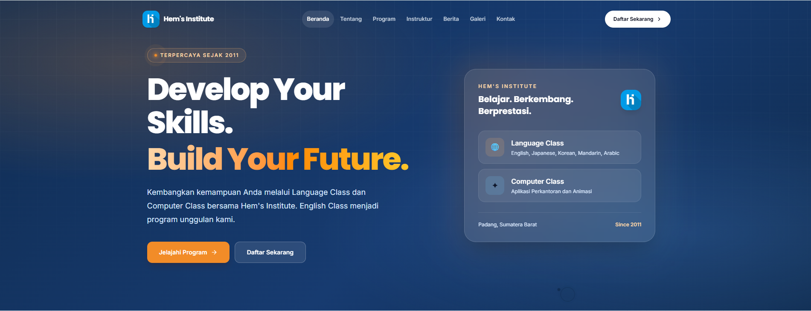

AI & Smart Solutions
Mempelajari pemanfaatan kecerdasan buatan dan automasi untuk menyederhanakan proses dan membuka kemungkinan baru.
AI & AUTOMATIONRuang untuk mendokumentasikan proses, eksperimen, dan karya. Konten proyek akan diperbarui seiring perkembangannya.

Website lembaga pelatihan dengan informasi program, kelas bahasa, kelas komputer, dan layanan pendaftaran.
VISIT WEBSITE ↗Mempelajari pemanfaatan kecerdasan buatan dan automasi untuk menyederhanakan proses dan membuka kemungkinan baru.
AI & AUTOMATIONEksplorasi peluang perdagangan, pengembangan usaha, dan cara menciptakan nilai melalui kolaborasi.
TRADE & VENTURE